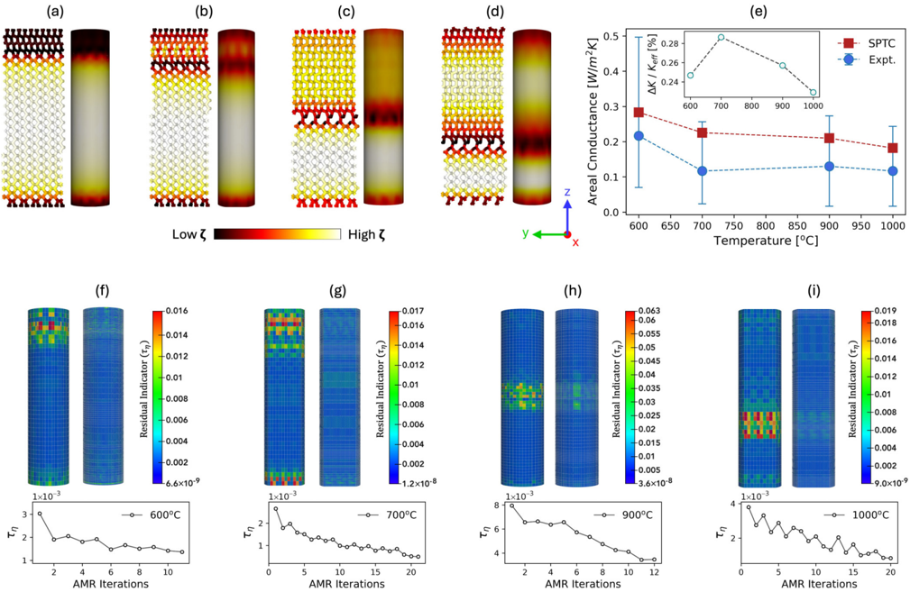

Autores: C. Ugwumadu (LANL), D. A. Drabold (Ohio U.), R. M. Tutchton (LANL)
Revista: Phys. Rev. Materials 10, 053804 (2026), Editor's Suggestion, DOI: 10.1103/pfdp-s7ql
Idea central
Construir modelos de elementos finitos (FE) para transporte térmico directamente a partir de simulaciones atomísticas, sin perder la anisotropía local ni la información de defectos. Introducen el toolkit SCACS (Simulator Collection for Atomic-to-Continuum Scales).
Pipeline SCACS
1. Site-Projected Thermal Conductivity (SPTC)
Descomposición de la conductividad Green–Kubo a nivel atómico: cada átomo (sitio) recibe un tensor de conductividad κ_i. Esto preserva la información local (defectos, interfaces, anisotropía).
2. GNN predice SPTC en estructuras grandes
- Entrenan una red neuronal de grafos para predecir el tensor κ_i por sitio.
- Permite escalar a sistemas atómicos grandes sin recalcular Green–Kubo en cada uno.
3. Coarse-graining → tensor anisotrópico
Los κ_i atómicos se agrupan en celdas → tensor κ(x) anisotrópico para el FE.
4. FE con malla adaptativa anisotropy-aware
- Resuelven la ecuación de calor estacionaria: ∇·q + Q = 0 con q = −κ(x)·∇T.
- Adaptive mesh refinement que respeta la anisotropía local del tensor.
Validación
- Aplicado a nanoestructuras de silicio.
- Reproduce conductividades bulk.
- Captura anisotropía driven by interfaces y defectos.
- Mantiene consistencia termodinámica.
- Predice tendencias y campos de conductancia coincidentes con experimentos.
Por qué importa
- Resuelve el problema clásico de "el continuo no sabe del átomo" → modelos FE típicos usan κ homogenizado y ciegan defectos.
- Aplicable a sectores donde la conductividad importa: nuclear, fusión, semiconductores, aeroespacial.
- Es un buen ejemplo del paradigma GNN como surrogate de simulación cara (Green–Kubo) → continuum scale.
Conexiones
- Filosóficamente cercano a [[CGCNN_cristales_Xie_Grossman_2018]] y [[CarNet_tensores_cartesianos_Chen_2025]]: GNN predice propiedad tensorial por sitio.
- Si te interesa transporte en materiales irradiados o nanoporous (con defectos), este es el bridging metodológico.
- Conexión con [[CNN3D_constantes_elasticas_nanoporosos_Zorkaltsev_2025]] — también escala atomístico → propiedades macroscópicas, pero ahí es elástico y por CNN, aquí es térmico y por GNN.
Figuras del Paper (6)

Sin caption
Figura en pagina 1.

FIG. 1. Architecture and Training of sptc-ai . Empirical probability of high-SPTC outcome from binned distribution of the continuous structural descriptors, including (a) the coordination number (CN), (b) the root-mean-square deviation from the ideal tetrahedral angle ( ∠ rms), (c) the mean (B µ ) and (d) standard deviation (B σ ) of bond lengths, and the (e) fractions of short (BS) and (f) long (BL) bonds. (g) Farthest point sampling score for all structures. (h) Mean absolute error (MAE) for the averaged directional SPTC ( ˆ ζ c ) and the directly predicted isotropic SPTC ( ˆ ζ d ) for the different training set sizes.
FIG. 1. Architecture and Training of sptc-ai . Empirical probability of high-SPTC outcome from binned distribution of the continuous structural descriptors, including (a) the coordination number (CN), (b) the root-mean-square deviation from the ideal tetrahedral angle ( ∠ rms), (c) the mean (B µ ) and (d) standard deviation (B σ ) of bond lengths, and the (e) fractions of short (BS) and (f) long (BL) bonds. (g) Farthest point sampling score for all structures. (h) Mean absolute error (MAE) for the averaged directional SPTC ( ˆ ζ c ) and the directly predicted isotropic SPTC ( ˆ ζ d ) for the different training set sizes.

FIG. 2. Performance of sptc-ai . The 'NSPTC' colorbar indicates the normalized SPTC, ranging from 0 (blue) to 1 (red), while the 'Structure Class' colorbar encodes the OVITO-based local environment: amorphous (0, gray), cubic diamond (1, blue) and its first (2, cyan) and second (3, green) neighbors, and hexagonal diamond (4, orange) with its first (5, yellow) and second (6, lime) neighbors. (a) Model performance on held-out test structures: computed (top) and predicted (bottom) SPTC distributions for (left → right) amorphous, defective, and purely crystalline Si. (b) Generalization of sptc-ai to an unseen amorphous-crystalline Si interface containing 2022 atoms, showing (i) structure class, (ii) predicted SPTC, and (iii) computed SPTC. (c)-(e) Structure class and predicted SPTC for (c) a 223 930-atom Si twin-grain-boundary nanowire, (d) a 134 923-atom polycrystalline Si nanowire, and (e) a 26 191-atom Si nanopillar. Panels (c) and (d) show mid-slices; the black rectangle in (e) highlights the zoomed mid-slice region of the nanopillar.
FIG. 2. Performance of sptc-ai . The 'NSPTC' colorbar indicates the normalized SPTC, ranging from 0 (blue) to 1 (red), while the 'Structure Class' colorbar encodes the OVITO-based local environment: amorphous (0, gray), cubic diamond (1, blue) and its first (2, cyan) and second (3, green) neighbors, and hexagonal diamond (4, orange) with its first (5, yellow) and second (6, lime) neighbors. (a) Model performance on held-out test structures: computed (top) and predicted (bottom) SPTC distributions for (left → right) amorphous, defective, and purely crystalline Si. (b) Generalization of sptc-ai to an unseen amorphous-crystalline Si interface containing 2022 atoms, showing (i) structure class, (ii) predicted SPTC, and (iii) computed SPTC. (c)-(e) Structure class and predicted SPTC for (c) a 223 930-atom Si twin-grain-boundary nanowire, (d) a 134 923-atom polycrystalline Si nanowire, and (e) a 26 191-atom Si nanopillar. Panels (c) and (d) show mid-slices; the black rectangle in (e) highlights the zoomed mid-slice region of the nanopillar.

FIG. 3. Analysis of sptc2fem results for the amorphous-crystalline Si structure. (a) Anisotropic and isotropic SPTC (top) and coarsegrained conductivity (bottom); colormap shows normalized values. (b) Adaptive mesh refinement using the equal mass controller with Dörfler marking, showing coarse (left) and refined (right) meshes. (c)(d) Dirichlet solve for thermal loading along z : magnitude of the flux and temperature gradient. (e) Steady-state temperature for K ( x ) = 1 and (f) for sptc-ai ; arrows mark regions with differing temperature transitions. (g)-(l) Slices at z = 30 Å of directional fluxes, flux magnitude, temperature-gradient magnitude, and flux residuals η . (m) Histogram of continuity residual and (n) the AMR convergence.
FIG. 3. Analysis of sptc2fem results for the amorphous-crystalline Si structure. (a) Anisotropic and isotropic SPTC (top) and coarsegrained conductivity (bottom); colormap shows normalized values. (b) Adaptive mesh refinement using the equal mass controller with Dörfler marking, showing coarse (left) and refined (right) meshes. (c)(d) Dirichlet solve for thermal loading along z : magnitude of the flux and temperature gradient. (e) Steady-state temperature for K ( x ) = 1 and (f) for sptc-ai ; arrows mark regions with differing temperature transitions. (g)-(l) Slices at z = 30 Å of directional fluxes, flux magnitude, temperature-gradient magnitude, and flux residuals η . (m) Histogram of continuity residual and (n) the AMR convergence.

FIG. 4. Analysis of the sptc2fem results for the other structures. (a) Twin grain boundary: isotropic conductivity (arrows mark EMCrefined regions), temperature gradient, and flux (left to right). (b) Polycrystalline Si: anisotropic SPTC (top) and coarse-grained conductivity (bottom); colormap shows normalized values, and (c) the magnitude of temperature gradient (top) and flux (bottom) for thermal loading along x , y , and z (left to right). (d) Silicon nanopillar: magnitude of temperature gradient (left) and flux (right) for thermal loading along x , y , and z (top to bottom).
FIG. 4. Analysis of the sptc2fem results for the other structures. (a) Twin grain boundary: isotropic conductivity (arrows mark EMCrefined regions), temperature gradient, and flux (left to right). (b) Polycrystalline Si: anisotropic SPTC (top) and coarse-grained conductivity (bottom); colormap shows normalized values, and (c) the magnitude of temperature gradient (top) and flux (bottom) for thermal loading along x , y , and z (left to right). (d) Silicon nanopillar: magnitude of temperature gradient (left) and flux (right) for thermal loading along x , y , and z (top to bottom).

FIG. 5. Experimental validation of the method. (a)-(d) Atomic-scale (left) and FEM-scale (right) 3C/2H nanowire models at annealing temperatures of 600, 700, 900, and 1000 ◦ C. The colormap spans low (black) to high (white) SPTC. (e) Experimental areal conductance [70] compared with SPTC-derived values (W / m -2 K -1 ); the inset shows the percent relative difference, /Delta1 K = K exp -K eff . (f)-(i) Mesh refinement showing the starting coarse (left) and final refined (right) meshes. The bottom panel shows convergence of the residual indicator threshold τη for each refinement series.
FIG. 5. Experimental validation of the method. (a)-(d) Atomic-scale (left) and FEM-scale (right) 3C/2H nanowire models at annealing temperatures of 600, 700, 900, and 1000 ◦ C. The colormap spans low (black) to high (white) SPTC. (e) Experimental areal conductance [70] compared with SPTC-derived values (W / m -2 K -1 ); the inset shows the percent relative difference, /Delta1 K = K exp -K eff . (f)-(i) Mesh refinement showing the starting coarse (left) and final refined (right) meshes. The bottom panel shows convergence of the residual indicator threshold τη for each refinement series.